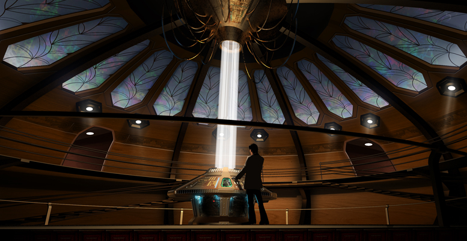

小天窗已失明，目前就读于厦门大学，一名"不顾正业"的程序猿，所属软件学院软件工程专业，贝壳工作室后台开发组成员，沉迷于Java后端技术开发， 梦想着进入BAT，也将一直为此不断努力着。
小天窗已失明，目前就读于厦门大学，一名"不顾正业"的程序猿，所属软件学院软件工程专业，贝壳工作室后台开发组成员，沉迷于Java后端技术开发， 梦想着进入BAT，也将一直为此不断努力着。
小天窗已失明，目前就读于厦门大学，一名"不顾正业"的程序猿，所属软件学院软件工程专业，贝壳工作室后台开发组成员，沉迷于Java后端技术开发， 梦想着进入BAT，也将一直为此不断努力着。
兴趣爱好
- 擅长编程：沉迷于Java开发，专注于Web后端技术，追求新技术探索；
- 喜欢旅游：喜欢风景和文艺之地，也争取未来远离"颈椎"的困扰；
- 喜欢音乐：唯一喜欢的音乐，民谣，她不着一爱字，却处处见情深；
- 喜欢电影：英雄类大片、煽情类爱情片、校园类青春片，哈哈，都喜欢；
- 喜欢看书：喜欢明朝两百多年历史；